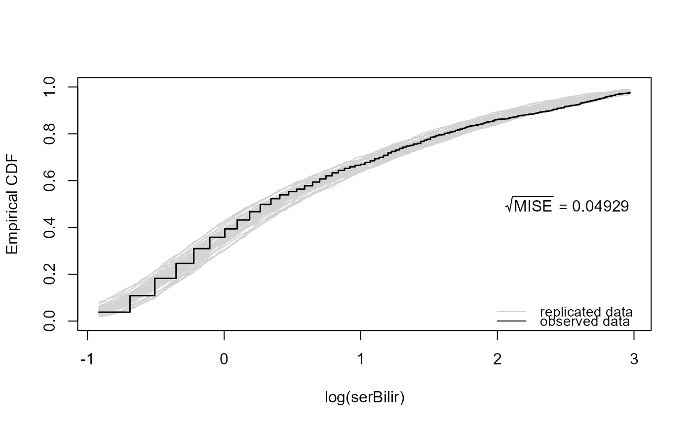
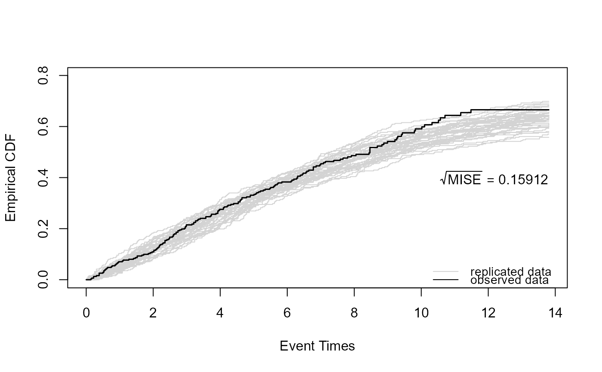

Posterior Predictive Checks for Joint Models
ppcheck.RdIt computes various posterior predictive checks for joint models.
Usage
ppcheck(object, nsim = 40L, newdata = NULL, seed = 123L,
process = c("longitudinal", "event", "joint"),
type = c("ecdf", "average-evolution", "variance-function",
"variogram", "surv-uniform"),
CI_ecdf = c("none", "binomial", "Dvoretzky-Kiefer-Wolfowitz"), CI_loess = FALSE,
outcomes = Inf, percentiles = c(0.025, 0.975),
random_effects = c("posterior_means", "mcmc", "prior"),
params_mcmc = NULL, Fforms_fun = NULL, plot = TRUE, add_legend = TRUE,
pos_legend = c("bottomright", "right"), main = "", xlab = NULL,
ylab = NULL, col_obs = "black", col_rep = "lightgrey", lty_obs = 1,
lty_rep = 1, lwd_obs = 1.5, lwd_rep = 1, line_main = NA,
cex.main = 1.2, ylim = NULL, ...)Arguments
- object
an object inheriting from class
"jm".- nsim
a numeric scalar denoting the number of replicated data.
- newdata
a data.frame based on which to simulate replicated data. Relevant for cross-validated posterior predictive checks.
- seed
the seed to use.
- process
a character string indicating for which process to do the checks.
- type
a character string indicating the type of checks. The default
ecdfcompares the empirical distribution function of the replicated data with the one of the observed data. For continous longitudinal outcomes, the average evolution, variance function and the sample variogram can also be used.- CI_ecdf
character string indicating the type of confidence interval for the emprical distribution function.
- CI_loess
logical; if
TRUEa 0.95 confidence interval for the loess curve is plotted.- outcomes
a numeric vector of indices indicating for which longitudinal outcomes to do the checks. The deault value
Infimplies checking all longitudinal outcomes.- percentiles
a numeric vector of length two indicating the percentiles of the observed data to use when depicting the checks.
- random_effects
a character string indicating what to do with the random effects.
- params_mcmc
a list with an MCMC sample of the model parameters.
- Fforms_fun
a function that calculates the functional forms.
- plot
logical; if
TRUEa plot is produced, otherwise the function returns a list with the values to create the figure.- add_legend
logical; if
TRUEa legend is added.- pos_legend
character string indicating the position of the legend.
- main, xlab, ylab, col_obs, col_rep, lty_obs, lty_rep, lwd_obs, lwd_rep, line_main, cex.main, ylim
graphical parameters.
- ...
extra argument passed to
plotmethod.
Author
Dimitris Rizopoulos d.rizopoulos@erasmusmc.nl
Examples
# \donttest{
# Cox model for the composite event death or transplantation
pbc2.id$status2 <- as.numeric(pbc2.id$status != 'alive')
pbc2$status2 <- as.numeric(pbc2$status != 'alive')
CoxFit <- coxph(Surv(years, status2) ~ sex, data = pbc2.id)
# a linear mixed model for log serum bilirubin
fm1 <- lme(log(serBilir) ~ ns(year, 3) * sex, data = pbc2,
random = list(id = pdDiag(~ ns(year, 3))))
# the joint model
jointFit <- jm(CoxFit, fm1, time_var = "year", save_random_effects = TRUE)
ppcheck(jointFit)

FF <- function (t, betas, bi, data) {
sex <- as.numeric(data$sex == "female")
NS <- ns(t, k = c(0.9911, 3.9863), B = c(0, 14.10579))
X <- cbind(1, NS, sex, NS * sex)
Z <- cbind(1, NS)
eta <- c(X %*% betas[[1]]) + rowSums(Z * bi)
cbind(eta)
}
ppcheck(jointFit, process = "event", Fforms_fun = FF)

# }